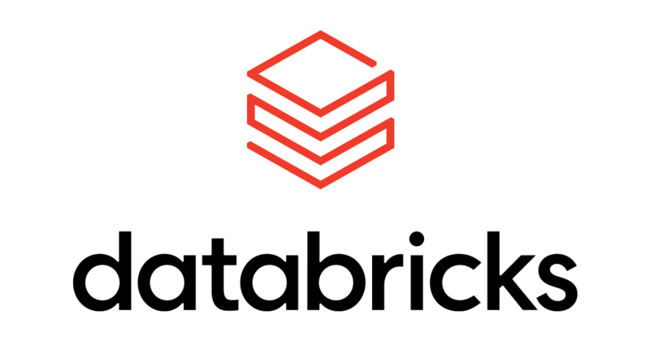

options(HTTPUserAgent = sprintf("R/%s R (%s)", getRversion(), paste(getRversion(), R.version["platform"], R.version["arch"], R.version["os"])))Databricks for R Users
brickster
httr2
mlflow
sparklyr
Getting started with Databricks and R. Tips after two years of use.
What is Databricks?
Databricks is a cloud-based data and AI platform that uses Apache Spark as its engine for automating large-scale data processing and machine learning. While Spark itself is an open-sourced project, its creators founded Databricks to lower the barrier to entry for organizations struggling with the management and configuration of Spark clusters, drivers, executors, nodes, dependencies, security, etc.

As Databricks attracted data engineers, analysts, machine learning practitioners, and Wall Street,1 it evolved into the comprehensive AI platform we know today. The company open-sourced MLflow to support ML and GenAI experimentation, deployment, and model lifecycle management, and at the Databricks 2024 Data + AI Summit,2 they open-sourced Unity Catalog to unify governance and security controls and simplify lakehouse architectures (data lakes + data warehouses) and make it easier to manage tabular data, unstructured data, and storage of data files, functions, and trained AI model objects.
Databricks can do a lot, a lot that I love, but make no mistake about a few things:
- Databricks is a Python-first platform
- Notebooks are everything on Databricks
- You can’t launch robust IDEs on top of Databricks3
- The future of Databricks appears to be serverless and this should be very concerning to more R users4
And let’s take a quick sidebar to discuss notebooks… It’s not that I don’t like notebooks! I’ve used R Markdown and Quarto for years and as feature-rich as they might be for “scientific and technical publishing,” you’re either coding in Markdown or code chunks… It smells a lot like a notebook. 🤷♂️ This entire website was built with Quarto and R, but I’m using an IDE to interact with the codebase for my website project. Imagine doing all of your development work in a Jupyter Notebook (an .ipynb file)… “Yuck” is the only appropriate sentiment here. Robust development on notebooks without an IDE feels wrong for this simple reason: It sucks. If you’re new to Databricks in 2025 as a Python or R user, get ready for notebooks hell.
Back to the good stuff… My motivation for this post was to share personal best practices that I’ve adopted after more than two years of near daily use of Databricks as an R user. I am more frequently meeting R users that have started to leverage Databricks or “plan to” in the near future - If this is you and you’re stuck, don’t hesitate to reach out. And if you’re an experienced R + Databricks user, I more than welcome any recommendations! Enough of the background context, let’s dive in.
Package Management
To understand packages on Databricks, let’s take a step back to better understand what happens when a Spark cluster boots up. When a Databicks Spark cluster is launched with your runtime of choice, you’re launching a pre-configured and managed image that comes pre-installed with a minimal Ubuntu CLI, Spark, Python, R, Java (spark runs on Java Virtual Machines or “JVMs”), Apache Arrow, and tons of Python and R packages. These are referred to as “Databricks runtimes” and as of the original publication of this post, the most current Long Term Stable (“LTS”) Databricks runtime version is the 15.4 runtime. Here is a general link to Databricks runtime release notes including notes for pre-release versions: https://docs.databricks.com/en/release-notes/runtime/index.html
I often visit the Databricks docs to know which exact Python and R package versions are pre-installed on my cluster. It is costly to keep Spark clusters “always on” and your Databricks admins likely impose rules to automatically shutoff your Spark clusters if they are inactive for some period of time (for reference, I think my clusters auto-shutoff after an hour of inactivity). Whenever you re-launch your cluster, you need to re-install packages that aren’t part of your Databricks runtime image. On the surface, this is a non-issue, but in reality, I find myself having to re-launch my Spark clusters at least once a day (often multiple times daily) due to conference calls, unscheduled strategy sessions, ad hoc technical work calls, etc. It takes 8-10 minutes to launch a Spark ML cluster using the Databricks 15.4 LTS runtime and if you need to install or update specific R and Python packages, add several extra minutes until you’re ready to work with Databricks. Databricks serverless compute clusters allow you to connect on-demand to pre-launched clusters, but as mentioned briefly above, R is not yet supported on Databricks serverless compute.
There is no gold standard for managing and/or persisting Python and R package dependencies on Databricks. You can modify your Spark cluster’s configuration to install certain packages every time your cluster launches, but I prefer to simply re-install project-package dependencies after I launch my Spark cluster. If your company implemented Databricks, it’s very likely your company also has an internal package manager that makes it easier for your employees to 1) deploy internally developed packages, and 2) install CRAN and PyPI packages from behind your company’s firewall. I’ve experienced a few package managers over the years and my favorite for Python and R packages is Posit Package Manager (“Posit PM”). This might sound unrelated to Databricks but it also leads me to my first major recommendation: Put the following code at the top of your Databricks R notebooks to ensure you can install package binaries from your package manager:
An even better recommendation would be to have your cloud engineering team include the above R code in your company’s global Databricks init script - It would be a moot point to include the above code in your Databricks notebooks if it were included in the global init scripts! So why is that code helpful? If a user calls the function install.packages("xgboost") and they’re pointing to Posit PM, a binary of the xgboost package is served given the OS and R version combination that’s included in your user agent request header. A package binary can be downloaded and installed very quickly compared to building the package from source code. For xgboost, you can download and install the R package binary in ~10 seconds versus ~5 minutes if I need to build it from source code. Sometimes the request header isn’t configured correctly (or is altogether missing on your environment) so the above code sets that configuration for you.
If you use Posit PM and you’re sensitive about adding options() to your notebooks or init scripts, you can run the following code to determine if you need to configure the user agent header:
local({
if (.Platform$OS.type != "unix" || Sys.info()["sysname"] == "Darwin") {
message("Success! Posit Package Manager does not require additional configuration to install binary packages on macOS or Windows.")
return(invisible())
}
dl_method <- getOption("download.file.method", "")
dl_extra_args <- getOption("download.file.extra", "")
user_agent <- getOption("HTTPUserAgent", "")
if (dl_method == "") {
dl_method <- if (isTRUE(capabilities("libcurl"))) "libcurl" else "internal"
}
default_ua <- sprintf("R (%s)", paste(getRversion(), R.version$platform, R.version$arch, R.version$os))
instruction_template <- 'You must configure your HTTP user agent in R to install binary packages.
In your site-wide startup file (Rprofile.site) or user startup file (.Rprofile), add:
%s
Then restart your R session and run this diagnostic script again.
'
message(c(
sprintf("R installation path: %s\n", R.home()),
sprintf("R version: %s\n", R.version.string),
sprintf("OS version: %s\n", utils::sessionInfo()$running),
sprintf("HTTPUserAgent: %s\n", user_agent),
sprintf("Download method: %s\n", dl_method),
sprintf("Download extra args: %s\n", dl_extra_args),
"\n----------------------------\n"
))
if (dl_method == "libcurl") {
if (!grepl(default_ua, user_agent, fixed = TRUE) ||
(getRversion() >= "3.6.0" && substr(user_agent, 1, 3) == "R (")) {
config <- 'options(HTTPUserAgent = sprintf("R/%s R (%s)", getRversion(), paste(getRversion(), R.version["platform"], R.version["arch"], R.version["os"])))'
message(sprintf(instruction_template, config))
return(invisible())
}
} else if (dl_method %in% c("curl", "wget")) {
if (!grepl(sprintf("--header \"User-Agent: %s\"", default_ua), dl_extra_args, fixed = TRUE)) {
ua_arg <- "sprintf(\"--header \\\"User-Agent: R (%s)\\\"\", paste(getRversion(), R.version[\"platform\"], R.version[\"arch\"], R.version[\"os\"]))"
if (dl_extra_args == "") {
config <- sprintf("options(download.file.extra = %s)", ua_arg)
} else {
config <- sprintf("options(download.file.extra = paste(%s, %s))", shQuote(dl_extra_args), ua_arg)
}
message(sprintf(instruction_template, config))
return(invisible())
}
}
message("Success! Your user agent is correctly configured.")
})If your user agent is configured correctly, you’ll see the following message in your console: Success! Your user agent is correctly configured. For more information on serving package binaries from Posit PM, visit their admin docs at https://docs.posit.co/rspm/admin/serving-binaries/.
One interesting solution for persisting Python and R packages is to write them to Unity Catalog Volumes and simply load them from these locations downstream. This was something that I did for my team prior to realizing that my user-agent header request wasn’t firing off correctly when requesting binaries from Posit PM. This approach has its benefits, namely that you don’t need to install packages every time your cluster starts, but package load time always felt way too long, e.g., 3 minutes for a handful of packages loaded via library(some_package) in your Databricks notebook. Additionally, my experience with Spark processes initiated from packages loaded from Unity Catalog Volumes always ran into weird Spark issues that were difficult for me and my teammates to resolve (and I’m generally good at troubleshooting Linux and R errors). All this said, persisting your packages on Unity Catalog Volumes is not a pattern that I’d recommend today, especially since I’m successfully downloading and installing package binaries once again.
One last note about package managers - At my workplace, our production services and applications (like Databricks) are prohibited from installing packages on the open web. We can only install packages that exist behind our firewall hence the need for an internal package manager solution. This may not be the case for you, i.e., you might be able to install packages from the web on your Databricks instance and if so, consider yourself lucky! While you’d need to figure out a solution for serving your company’s internally-developed R and Python packages, Posit hosts a free and public Posit PM from which you can download and install package binaries to your heart’s desire! Check out Posit’s public PM here: https://packagemanager.posit.co/
Spark with R
The best package for interacting with Spark clusters and R is by far sparklyr. While sparklyr is not limited to interacting with Databricks Spark clusters,5 I almost exclusively use it for this purpose. The sparklyr package uses reticulate to interact with the Python API, it provides a dplyr backend that works great with tidy pipelines, and it offers a DBI backend that integrates well with the RStudio IDE (and Positron?) Connections pane.
When working with R on the Databricks platform itself (in a notebook), creating a sparklyr connection is a breeze since the Databricks runtime images have all the required Python and R dependencies. Below is a basic pattern to establish a spark connection, copy a dataframe to a spark dataframe, and write it to a Delta Lake Table (or “Delta Table”) on your Unity Catalog:
# Load packages
library(sparklyr)
library(tibble)
library(dplyr)
# Establish spark connection in a Databricks R Notebook
sc <- sparklyr::spark_connect(method = "databricks")
# Copy the iris dataframe to a Spark df
iris <- tibble::as_tibble(iris)
spark_iris <- sparklyr::copy_to(sc, iris)
# Write the Spark df to a Delta Table on Unity Catalog
# Note: The spark_iris object captures the inherent sc connection
sparklyr::spark_write_table(
x = spark_iris,
name = "uc_catalog.schema.some_table_name"
)Things get a little more complicated if you want to connect to your Databricks spark cluster using, for example, the RStudio IDE running on a completely different AWS server from the Databricks endpoints. The reason for the complexity is that you’ll need to create and use a local Python virtual environment with the appropriate Spark dependencies that match the Databricks runtime version that you’re wanting to connect to. The sparklyr authors wrote a vignette on how to do this using the “Databricks Connect” method and the following bullet highlight the main to-do’s:
- Set global environment variables
DATABRICKS_HOSTandDATABRICKS_TOKEN6 - Install the R packages
sparklyrandpysparklyr - Create the local Python virtual environment using the Databricks runtime on your Spark cluster
- Connect to your remote Spark cluster
- Copy a local df to Spark and write to a Delta Table on Databricks Unity Catalog
The following code executes the steps mentioned above for a Spark cluster running Databricks runtime 15.4 LTS:
# Set the following two env vars in your .Renviron:
# 1) DATABRICKS_HOST=your_Databricks_workspace_URL
# 2) DATABRICKS_TOKEN=your_Databricks_PAT
usethis::edit_r_environ()
# Install packages
install.packages("sparklyr")
install.packages("pysparklyr")
# Create local Python virtual env w/ all Spark dependencies
pysparklyr::install_databricks("15.4")
# Establish connection to remote Databricks Spark cluster
library(sparklyr)
sc <- sparklyr::spark_connect(
master = Sys.getenv("DATABRICKS_HOST"),
token = Sys.getenv("DATABRICKS_TOKEN"),
cluster_id = "Enter your cluster ID here",
method = "databricks_connect"
)
# Copy the iris dataframe to a Spark df
library(tibble)
library(dplyr)
iris <- tibble::as_tibble(iris)
spark_iris <- sparklyr::copy_to(sc, iris)
# Write the Spark df to a Delta Table on Unity Catalog
# Note: The spark_iris object captures the inherent sc connection
sparklyr::spark_write_table(
x = spark_iris,
name = "uc_catalog.schema.some_table_name",
mode = "overwrite"
)Whether you’re utilizing sparklyr on Databricks itself or in a remote IDE, the Spark connection is a pre-requisite for being able to interact with Delta Tables on Unity Catalog, ETL, and model training on Databticks.
sparklyr::spark_connect()
While similar, make note that the method argument in the spark_connect() functions above use two different values: method = "databricks" is required if you’re developing on a Databricks R Notebook, while method = "databricks_connect" is required if remotely connecting to your Databricks cluster.
At this point, I believe it’s worth diving more into the nuances of Spark clusters and the ways to tap into distributed computing as an R user. The following text can be found on the Databricks for R Developers docs:
Databricks clusters consist of an Apache Spark driver node and zero or more Spark worker (also known as executor) nodes. The driver node maintains attached notebook state, maintains the SparkContext, interprets notebook and library commands, and runs the Spark master that coordinates with Spark executors. Worker nodes run the Spark executors, one Spark executor per worker node.
A single node cluster has one driver node and no worker nodes, with Spark running in local mode to support access to tables managed by Databricks. Single node clusters support RStudio, notebooks, and libraries, and are useful for R projects that don’t depend on Spark for big data or parallel processing.
For data sizes that R struggles to process (many terabytes or petabytes), you should use multiple-node or distributed clusters instead. Distributed clusters have one driver node and one or more worker nodes. Distributed clusters support not only RStudio, notebooks, and libraries, but R packages such as SparkR and sparklyr, which are uniquely designed to use distributed clusters through the SparkContext. These packages provide familiar SQL and DataFrame APIs, which enable assigning and running various Spark tasks and commands in parallel across worker nodes.
I haven’t yet mentioned the SparkR package since Databricks is deprecating it on runtimes 16.0 and above. But in layman terms, the above highlights that Spark can be used to train large-scale models via distributed and parallelized processes. However, this only works as expected if and only if you rely on an underlying model algorithm that natively supports Spark. I want to impress upon you the following point: You shouldn’t expect to see benefits from Spark for model training capabilities if you’re using algorithms like XGBoost. There is no native Spark binding for R and XGBoost so you’d be much better served relying on the gradient boosted model implementation found in the sparklyr package.
Every project is different and perhaps your desire to use a tried and trusted modeling framework like XGboost trumps the benefits you’d gain from using a gradient boosted tree implementation in sparklyr, but I highly recommend reviewing the Machine Learning pages on the sparklyr website. I am a huge fan of the tidymodels framework for reproducible ML, and this tidymodels & Spark blog post explains how to make the most of Spark within the tidymodels paradigm. This is useful when modeling on Databricks because I’m able to leverage popular algorithms written with full Spark support. That’s not to say I haven’t struggled with these sparklyr ML algos trying to make my workflows conform to a tidymodels style, I have struggled, but it still presents a huge leap forward for R users needing distributed compute capabilities. I’ve struggled with tidymodels and sparklyr with around pre-processing steps, hyperparameter tuning, and downstream model evaluation. For example, hyperparameter tuning with sparklyr requires a bit of a deviation from the tidymodels approach I like, e.g., support for tune, dials, and finetune are limited when using sparklyr. Evaluating model performance with yardstick also feels a bit limiting with the ML model implementations found in sparklyr. That said, sparklyr is singlehandedly making my daily life easier when working with Databricks and Spark, so I recognize my complaints are largely petty.
I hear this problem often from both Python and R users: “I’m not seeing the alleged benefits of Spark for ML training with Databricks.” Almost always, the core issue is that a Spark-friendly model algorithm is not being used for model training and hyperparameter tuning.7
Unity Catalog
The Databricks connect method is the best way to interact with Delta Tables on Unity Catalog, however, it can get annoying that you need to first connect to a spun up Databricks cluster before interacting with Delta Tables via Spark. Things are looking promosing in the near future for being able to read (maybe write?) to Unity Catalog using lazy loading techniques. Delta Tables extend Apache Parquet with file-based transaction logs and there is already some promising experimentation underway that might let us lazily load or scan Delta Tables - without the need to connect to a Spark cluster - using tools like Apache Arrow, DuckDB, and Polars. I’ve been experimenting with the Unity Catalog DuckDB community extension (still very much experimental) and this could be a big win.
In addition to interacting with Delta Tables on Unity Catalog, I regularly read and write objects to Unity Catalog Volumes. The thing I love about Volumes is that I can completely leverage the Databricks REST API to interact with UC Volumes and I don’t need to worry about connecting to any Spark clusters. Prior to October 2024, the brickster package was not on CRAN so I had been maintaining an R package for Databricks users since 2023 that allowed data scientists at my company to interact with objects on UC Volumes. The Databricks team that developed brickster did an amazing job making a wide array of helper functions easily accessible and in fact, I’ve already incorporated many aspects of the brickster package into my internally-developed package. It can do way more than just interact with UC Volumes and here is their package website docs for reference: https://databrickslabs.github.io/brickster/
Footnotes
In a Series J investment round in December 2024, Databricks raised $10 billion at a valuation of $62 billion. Series J…!↩︎
Databricks gave my company 10 passes for their Data + AI Summit and I was fortunate to attend with 16,000 other people in San Francisco, all under one roof. It was definitely the biggest conference I’ve ever attended and amazing to experience firsthand.↩︎
In the past, Databricks users could attach init scripts to their Spark clusters that’d allow them to launch VS Code or RStudio on top of Databricks. Databricks disabled this feature in 2024 gibven the future promises of the Databricks Lakehouse App Store (I believe this is technically a component of the Databricks Marketplace). The Lakehouse App Store will eventually (hopefully) have launchable IDEs on top of Databricks but the details and timing are nebulous. Databricks releases something like 32,164 new features per week so cut them some slack.↩︎
Surprise! Databricks serverless compute does not support R and the future of R on Databricks serverless is still unknown.↩︎
sparklyris an amazing package created by Posit’s MLVerse team and has over 75 contributors on the sparklyr GitHub repository↩︎The
DATABRICKS_HOSTenv var will match your Databricks workspace instance URL and theDATABRICKS_TOKENwill represent the personal access token that you create in your Databricks user settings.↩︎Several hyperparameter tuning frameworks exist for Python users that don’t quite have a complimentary match for R. One of the benefits of hyperparameter tuning on Databricks with MLflow and Ray Tune is that each of your hyperparameter comboninations tested during your tuning procedure can get logged to Databricks Experiments, each with its own
run_id, making it a lot easier to use the Databricks platform itself for comparing pros/cons of different hyperparameter combinations.↩︎